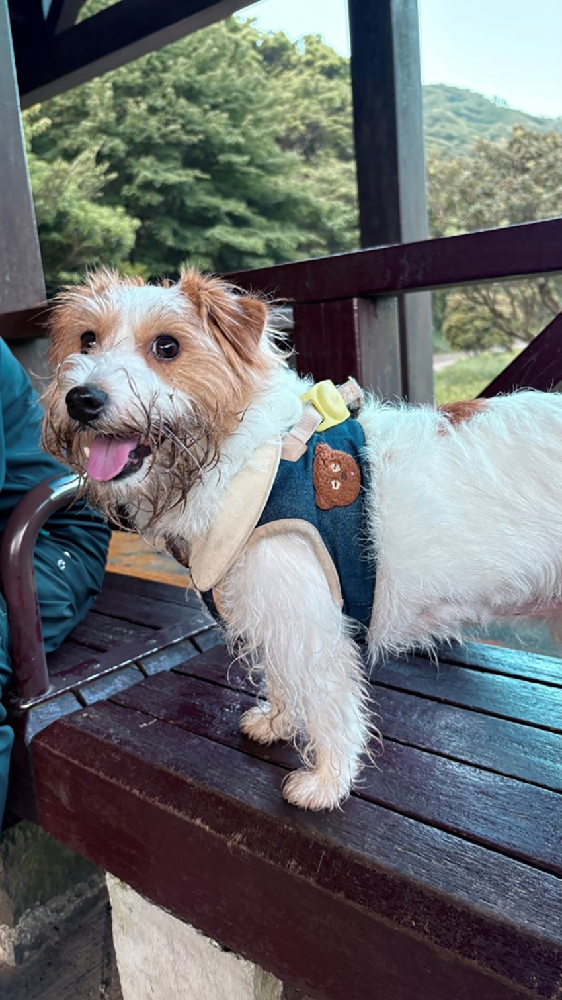
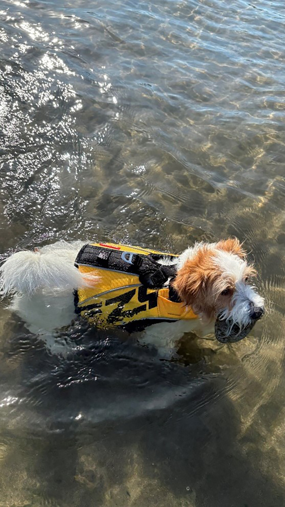
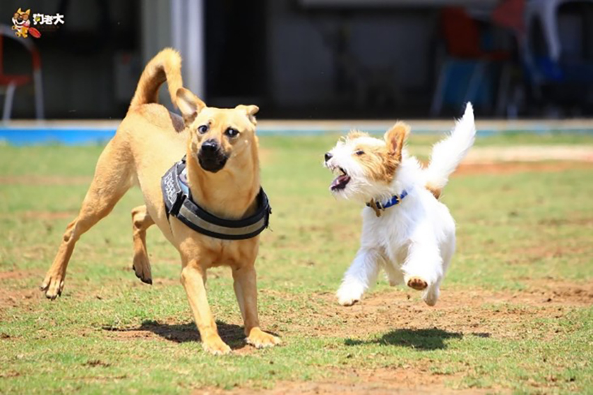

認真守護著媽媽立好的雞蛋
林怡華│全球PC品保中心＼品質系統部
|  |
今年的端午節，可愛的柴柴貓陪我一起蹲低低立雞蛋。起初牠好奇著媽媽在寶貝甚麼？為何對這個白白的球這麼有興趣？會想出貓手“幫忙”，當然是越幫越忙囉…後來就乖乖趴在旁邊看媽媽努力。經過幾番嘗試，雞蛋突然神蹟般的站立著！柴柴親眼目睹了這個過程，可能也覺得很神奇吧….從雞蛋站起來的那刻起（大約是11:45分）到雞蛋倒下前，柴柴都沒出手撥弄也沒離開，認真地守護著這顆媽媽立起來的雞蛋。守著守著還打盹的模樣真可愛！直到下午3點多，雞蛋還直挺挺地著……
|  |
|  | ||
| 柴柴累了，問：我可以下班了嗎？哈哈。 |